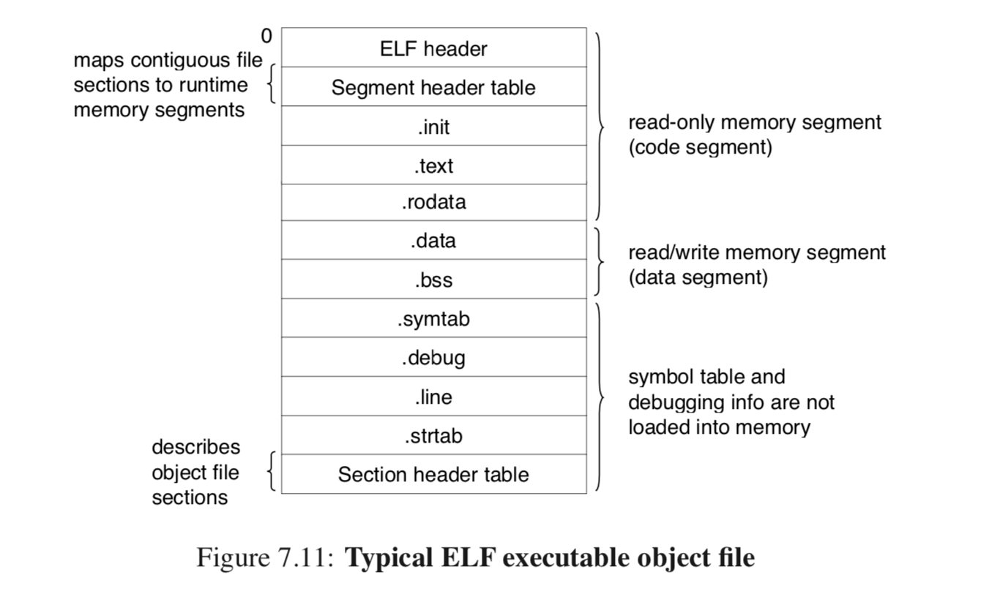

Lab0
Abstract
从
8086汇编实验之后，前后两周的时间勉强通过Lab1。
最大的感触是基础太差:对C语言的理解，对程序编译链接本质的理解，对GDB等工具的使用……当然也包括弱弱的英语理解能力。导致完成Lab1用了这么久的时间。 但是这次触动中却又多了一丝见山不是山，见山又是山的感觉。主要体现在我对操作系统的理解最终都回归到代码上来。比如printf函数的实现就涉及C语言中变参的特性。有理由相信这种血浓于水的关系在后续的Lab中还会进一步加强，所以我也希望这会是我学习OS最完美的方法论——————Talk is cheap, show me the code.。 截止到Lab1，整个学习的过程显得很清晰————就是通过调试kernel的反汇编代码来理解运行原理并加以修改。Lab0是我在实验过程中掉进的坑，查阅的资料和逐渐点亮的技能树，缩短实验前的准备时间对理解OS本身还是很有帮助的。
6.828实验环境的搭建
- 虚拟机环境: Ubuntu14.4 (32位)
- 仿真器: Qemu
git clone https://github.com/mit-pdos/6.828-qemu.git qemu - 实验代码: Lab
git clone https://pdos.csail.mit.edu/6.828/2018/jos.git lab> 虚拟机环境32位，因为JOS就是32位的操作系统。
> 仿真器使用MIT进行patched过的(见上链接)。原因是实验中分页机制是有意修改过的，使用patched version的话在后面Exercise中不需要手动转换地址。
> 关于实验代码，默认熟悉Git和MakeFile。每做完一个Exercise可以使用make grade进行测试。
> 在整个实验环境搭建的过程中，可能会因为虚拟机发型版本的不同而出现不同的链接库丢失，Google一下。详细的搭建过程见Tools Guide
关于6.828
MIT的OS课程。学习共有三条主线:
Lectures,Readings,Labs。
当然最重要的就是Labs。关于剩余的两部分，主要围绕一个叫做xv6的小型OS展开的。简单来讲，这是一个麻雀虽小五脏俱全的OS。有Documents和Source Code两份资料。知乎上评价很高，有人将其翻译成为中文版本上传至Github.XV6_Ch，传说看懂源码之后可以超神……
做Lab的过程中，课程会提供大量的Readings来阅读，当然都是英文的。详细见Reference。
80386汇编和内联汇编
AT&T-80386
在之前的汇编实验中，我们学习了16位的
Intel-8086汇编。而在32位机器上需要使用32位的80386汇编语言。虽然对于Linux来说，8086和80386的机器是有很大的差别的，主要体现在实模式和保护模式上。但是就语言本身而言，更多的是递进的关系而语法差别并不大。目前还没有遇到保护模式相关的障碍。
x86的汇编主要有两种格式:Intel和AT&T。6.828使用的是AT&T,而实际上Linux中的汇编也是后者居多。汇编语言本身主要有指令集Instruction Set和伪指令Directives两大部分内容。当然最全的文献是Intel自家的Documents，不过我觉得有些太杂和多了。下面的的资料在实验过程中帮了我很多。值得细看。
- MIT----pcasm-book。
- Wikipedia----x86 Instruction Set
- Oracle----x86 Assembler Directives
内联汇编
因为操作系统本身就是和硬件打交道最频繁的系统软件，有些地方需要使用到汇编来简单粗暴的完成工作。内联汇编就是嵌入在C语言中的汇编语言，格式和原来的有很大的不同。不过IBM的那份资料可以解决一大半问题，也是难得的中文文档……
- MIT----Brennan's Guide to Inline Assembly
- IBM----汇编语言开发指南
ELF文件
实名Diss网上各种对ELF的讲解，故意弄混
section和segment的概念。加上对二进制工具使用的不熟练，让我一度以为链接的难度系数是整个实验过程中最高的……直到我看到CSAPP中关于链接部分的讲解。
编译驱动程序
Compiler driver指的是从C文件变成二进制文件的机器操作过程。我们从两个角度理解这个过程:机器运行的角度和C文件类型变化的角度。编译器和汇编器将多个C文件编译成相应的多个可重定位目标文件，也就是平时的.o文件，这种文件由不同的代码节和数据节构成，节在原文中是section。而链接器将多个.o文件链接成为一个可执行目标文件也就是平时的二进制文件。见下图:
熟悉一个程序的第一步是关注其输入输出。一句话总结链接器的功能:以一组可重定位目标文件和命令行参数作为输入，生成一个完全链接的可以加载和运行的可执行目标文件作为输出。 站在机器的角度，编译器和汇编器将ASCII格式的C文件编译成为字节块section的集合，而链接器做的就是将不同可重定位目标文件中的各种
sections做归类，确定被链接块的运行时的内存位置。这是重点，目标文件纯粹是字节块的集合，而链接器本身对程序也所知甚少，她做的仅仅是对字节文件做处理，将多个文件的字节块放到了一个文件中。
链接过程
链接器做两件事: * 符号解析: 输入文件的符号引用都对应到其定义上。 * 重定位: 编译器和汇编器生成的文件地址都是从0开始的，并没有和内存挂上关系。而链接器将这些不同的
section定位到内存中的一个地址。也就是其加载地址。 重点关注第二步重定位，本质上就是将多个可重定位文件中同类型的.section合并为一个大的聚合节。但是注意这时候还没有segment的概念,聚合节还是叫做.section。我查阅了CSAPP的英文版，全书第一次提到segment是在链接器部分的最末尾，也就是讲重定位的时候。下面是原文:
明显看到
segment还是内存的概念而非可执行文件中的部分。所以从头到尾链接过程都没有生成过segment这样一种东西，其只是多个sections对应于内存中的映射。全书对链接部分的讲解也很少提及segment，所以我们对链接的理解最小单位应该是section，链接过程就是对section进行操作;而最后重定位的时候将多个大的section映射到一段内存中，映射的单位才是segment。现在看下图就很清楚了:

从文件类型的角度来看: 目前我们谈到的ELF文件有可重定位目标文件和可执行目标文件。可以使用二进制工具ELF文件进行分析。关于链接更本质的过程还是很复杂的，Lab1后面会有一部分和符号表相关的实验，建议先详细看看
CSAPP和下面提供的资料。 * MIT----The definitive standard for the ELF format * Wikipedia----Executable and Linkable Format * ELF中文文档----ELF.Ch ### 二进制分析工具 6.828中主要使用objdump，基本工具可以通过man来查看用法，这里列出几个最常见的参数。
Objdump
对目标文件进行分析，在Linux平台上有三种
object file:Relocatable object File,Executable object File,Shared object File，一直没搞懂为啥都叫object File。不过因为这三种目标文件对应于链接的不同阶段，所以对于链接过程本质的理解直接影响这里使用这个二进制分析工具。
-fDisplay file headers-dDisassembly-hSection headers-xAll headers-SDisplay source code
Nm
列出目标文件中的符号表内容，应该和重定位关系密切。
阅读源码CLI工具
虽然我是Emacs党，但是不得不承认VIM在进行文本操作的时候还是更方便:)一些。
VIM-Ctags
这个就很强大了，用于在
tags文件所在的根目录下寻找函数声明和宏定义，在阅读源码的时候基本上不知道的定义和关键字都可以使用Ctags来进行定位，非常实用。
安装成功之后，在工程目录下面执行命令ctags -R *对当前目录递归建立索引，会生成tags文件。在源码中遇到未见过的函数便将光标放在其上Ctrl - }即可跳转到其声明的位置。Ctrl - o自动返回。
VIM_TagList
这个实际上没怎么用，功能是在VIM中打开目录树，便于程序员操作。可以先留下来，进一步观察。
Tmux
这又是一个神器，终端分屏功能强大，有
window,pannel等概念。和on-my-zsh配合使用简直了。不愿意折腾的话也可以在bash下直接使用。我们在GDB调试OS的时候使用她作为分屏工具，需要在家目录下加入配置文件~/.tmux.conf。

VimGrep
用于在指定目录下进行全局搜索并在另一个窗口打开;关键字
sample;在vim命令模式下执行命令； * :vim/sample/% | copen当前文件搜索 * :vim/sample/* | copen当前目录搜索 * :vim/sample/ ../** | copen从上一级目录开始递归搜索 * :vim/sample path1/** path2/** | copen多路径搜索 * :cclose关闭当前搜索